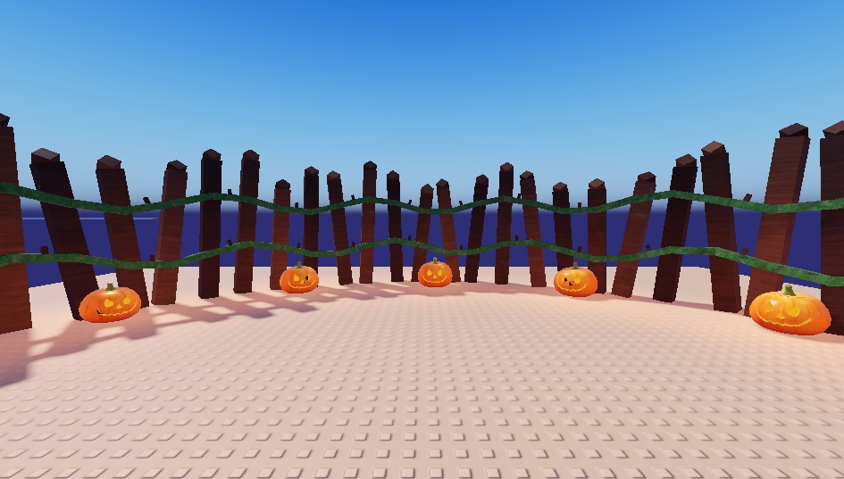
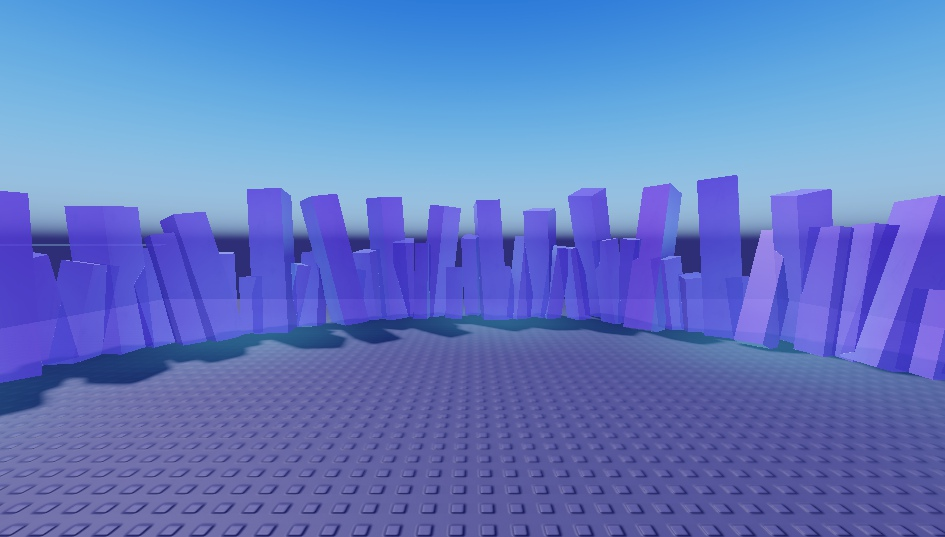
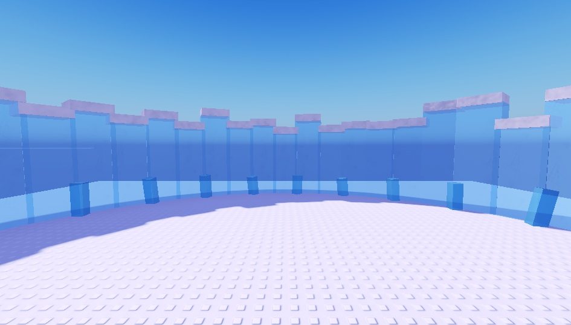
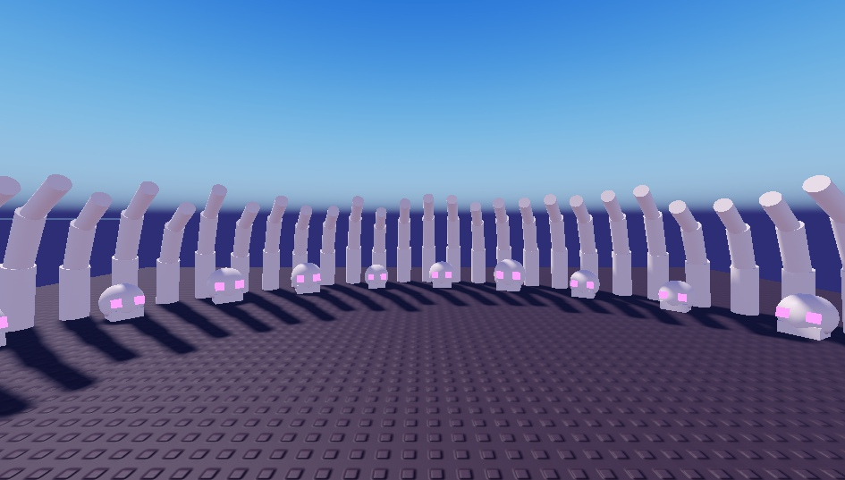
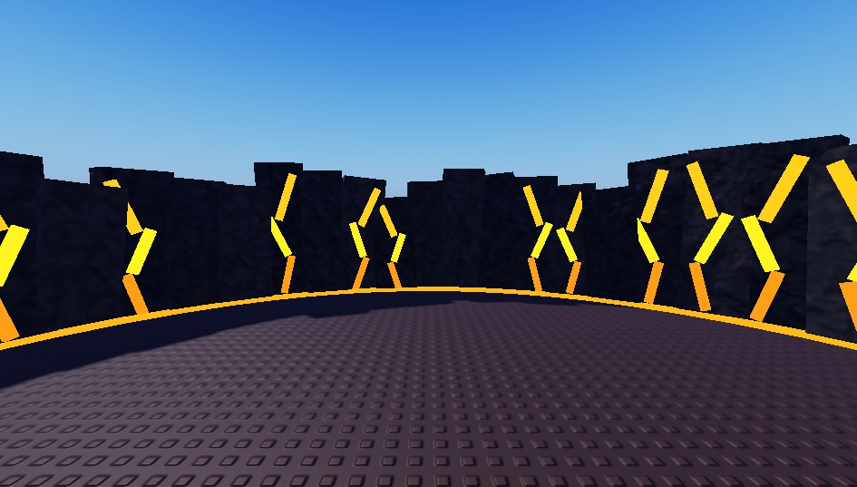
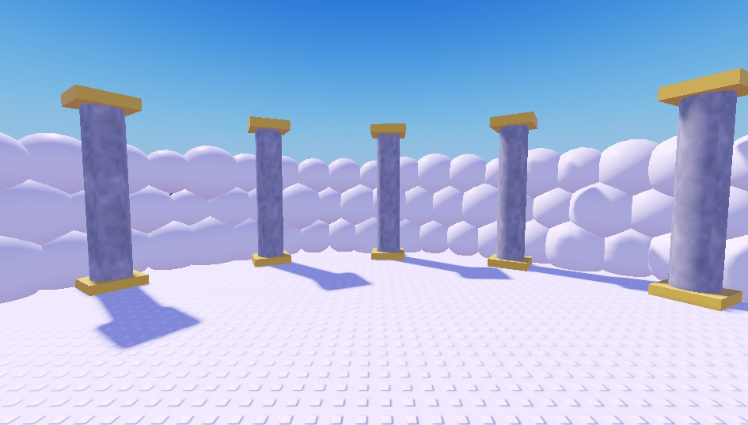

Captures dans Studio le 21/10, vues depuis l'intérieur de l'arène, en plein jour. Les flammes fantômes, la brume, les braises et le givre (des particules) et les lueurs ne se voient pas sur ces captures : ils n'apparaissent qu'en jeu.

Potager aux Citrouilles : pieux tordus, deux rangées de ronces à épines, vraies citrouilles-lanternes.

Grotte des Fantômes : cristaux violets mi-transparents (+ flammes vertes en jeu).

Royaume des Glaces : blocs de glace transparents enneigés, pics de glace au pied (+ givre en jeu).

Bois des Ombres : côtes d'os géantes, crânes aux yeux violets (+ brume violette en jeu).

Volcan : roche noire, fissures de lave en zigzag, ligne de lave au pied (+ braises en jeu).

Royaume Céleste : mur de nuages, colonnes de marbre à chapiteau doré.